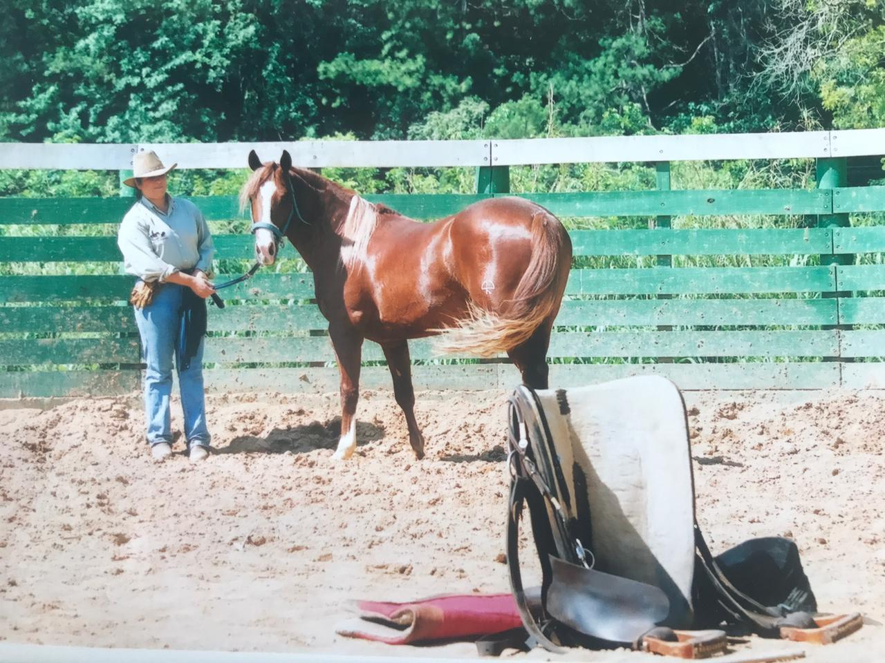

Como mencionado, a doma racional existe para que o animal seja condicionado a obedecer a seu criador, mas sem uso de violência. A partir da análise do comportamento do animal, ela foi criada para trabalhar a perseverança, a paciência, a repetição e o ritmo progressivo e contínuo dos equinos, a fim de que se tornem mais calmos, confiantes e conectados com o tutor. A punição e violência são dois aspectos deixados para trás, utilizados na doma tradicional – já proibida e prejudicial ao cavalo – e negados pela racional. Ao se aproximar do animal com carinho e atenção, cria-se uma relação mais confiante e segura, tanto para o criador quanto para o cavalo. Entra em cena como elemento importante para que o animal se torne manso e obediente a voz, que deve ser pausada e em tonalidades precisas e suaves ao cavalo. Mesmo sem usar a força, com esse tipo de doma ele se torna, aos poucos, animais mais tranquilos, confiáveis e obedientes. Ela pode ser iniciada logo nos primeiros anos de idade, quando o cavalo já consegue perceber os primeiros comandos e já possui estrutura física em desenvolvimento.
Após o Processo de doma(adestramento), o cavalo entra no programa de treinamento para qualquer modalidade, no caso inicia-se na modalidade de apartação, a princípio com os ensinamentos básicos de movimentação concretizado, o cavalo passa por uma avaliação de "Cow Sense", no programa o cavalo é submetido a exercícios de condicionamento, deixando sempre seu corpo e alma preparados para ser extraído o máximo da sua habilidade e performance, o treinamento é construído de forma diária. O Cow Sense é avaliado de acordo com a intensidade do cavalo trabalhar com boi, entre estas avaliações são verificados atitudes e reações ao estímulo de trabalho com gado, cada animal se comporta de formas variadas tornando cada cavalo um ser único com sua própria identidade, o trabalho de formação até sua primeira competição varia em media de 1 ano e meio a dois anos. Uns se desenvolvem mais rápidos que outros, de acordo com seu apetite de se trabalhar com gado. O periodo de treinamento segue uma rigorosa alimentação balanceada, com supervisões veterinárias, exercícios de condicionamento fisico e mental, para que no final deste período o cavalo possa mostrar o melhor de sua habilidade.
Aulas e Cursos são serviços disponibilizados pelo JF RODRIGUES QUARTER HORSES, bem como assessorias na compra e venda de animais, iniciação de potros, doma, treinamento, ensinando os primeiros passos, horse kids entre outros de acordo com a sua necessidade de adiquirir conhecimentos equestres e praticar a modalidade equestre.